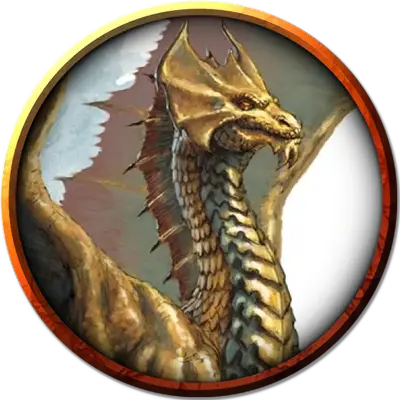

Великий латунный вирм
Brass Greatwyrm
Громадный Дракон (Металлический), законно-добрый

Класс Доспеха 22 (природный доспех)
Хиты 565 (29к20 + 261)
Скорость 60 футов, плавая 60 футов, летая 120 футов, копая 60 футов
| мод | спас | ||
|---|---|---|---|
| СИЛ | 30 | +10 | +10 |
| ЛОВ | 16 | +3 | +11 |
| ТЕЛ | 29 | +9 | +17 |
| мод | спас | ||
|---|---|---|---|
| ИНТ | 21 | +5 | +13 |
| МДР | 22 | +6 | +14 |
| ХАР | 30 | +10 | +18 |
Навыки Восприятие +22, Проницательность +14, Убеждение +18
Иммунитет к урону огонь
Иммунитет к состояниям испуг, отравление, очарование
Чувства истинное зрение 120 футов, пассивное Восприятие 32
Языки Общий, Драконий
Опасность 28 (120000 опыта)
Бонус мастерства +8
Особенности
Легендарное сопротивление (4/день). Если великий вирм провалит спасбросок, он может вместо этого преуспеть в нем.
Металлическое пробуждение (перезаряжается после окончания короткого или продолжительного отдыха). Если хиты великого вирма были уменьшены до 0, его текущее общее количество хитов вместо этого становится 450, он перезаряжает своё Оружие дыхания и восстанавливает все израсходованные применения Легендарного сопротивления. Кроме того, великий вирм теперь может использовать особенности из раздела «Мифические действия» в течение 1 часа.
Наградите партию дополнительными 120 000 опыта (всего 240 000 опыта) за победу над великим вирмом после активации его Металлического пробуждения.
Необычная природа. Великому вирму не требуются пища или вода.
Действия
Мультиатака. Великий вирм совершает одну атаку Укусом и две Когтем.
Укус. . Рукопашная атака оружием: +18 к попаданию, досягаемость 15 фт., одна цель. Попадание: 21 (2к10+10) колющего урона плюс 13 (2к12) урона силовым полем.
Коготь. . Рукопашная атака оружием: +18 к попаданию, досягаемость 10 фт., одна цель. Попадание: 19 (2к8+10) рубящего урона. Если целью является существо Огромного размера или меньше, оно становится схваченным (Сл высвобождения 20). Пока захват не закончится, цель опутана, и великий вирм не может схватить другую цель..
Хвост. . Рукопашная атака оружием: +18 к попаданию, досягаемость 20 фт., одна цель. Попадание: 21 (2к10+10) дробящего урона. Если цель существо, оно должно преуспеть в спасброске Силы Сл 26, иначе будет сбито с ног.
Оружия дыхания (перезарядка 5-6). Великий вирм использует один из следующих видов оружия дыхания:
• Дыхание стихии. Великий Вирм выдыхает стихийную энергию в 300-футовом конусе. Все существа в этой области должны совершить спасбросок Ловкости Сл 25, получая 84 (13к12) урона огнём в случае провала или половину урона в случае успеха.
• Истощающее дыхание. Великий вирм выдыхает газ в 300-футовом конусе. Все существа в этой области должны совершить спасбросок Телосложения Сл 25. При провале существо теряет сознание на 1 минуту. При успехе существо получает помеху на броски атаки и спасброски до конца следующего хода великого вирма. Бессознательное существо может повторять спасбросок в конце каждого своего хода, оканчивая на себе эффект в случае успеха.
Изменение формы. Великий вирм магическим образом превращается в любого гуманоида или зверя, сохраняя при этом его игровую статистику (кроме его размера). Это преобразование заканчивается, если хиты вирма уменьшаются до 0 или если он использует действие, чтобы завершить его.
Легендарные действия
Великий вирм может совершить 3 легендарных действия, выбирая из представленных ниже вариантов. За один раз можно использовать только одно легендарное действие, и только в конце хода другого существа. Великий вирм восстанавливает использованные легендарные действия в начале своего хода.
Атака. Великий Вирм совершает одну атаку Когтем или Хвостом.
Атака крыльями (стоит 2 действия). Великий вирм взмахивает крыльями. Каждое существо в пределах 30 футов от него должно преуспеть спасброске Ловкости Сл 26 или получит 17 (2к6 + 10) дробящего урона и будет сбито с ног. После этого великий змей может летать только на половину своей скорости.
Мифические действия
Если особенность Металлического пробуждения великого вирма активировалась в течении предыдущего часа, он может использовать приведенные ниже особенности в качестве легендарных действий..
Укус. Великий вирм совершает одну атаку Укусом.
Сокрушительный рёв (стоит 2 действия). Великий вирм издает магический рёв. Каждое существо в сфере радиусом 120 фт., с центром на великом вирме, должно преуспеть в спасброске Телосложения Сл 26 или получить 19 (3к12) урона звуком и стать недееспособным до конца своего следующего хода.
Опциональные правила
Драконы и врождённое колдовство. Драконы обладают врождёнными способностями к колдовству, и могут с возрастом осваивать новые заклинания при использовании этого опционального правила.
Молодые и более старые драконы могут накладывать количество заклинаний, равное их модификатору Харизмы. Каждое заклинание может быть наложено лишь один раз за день, не требуя материальных компонентов, и уровень заклинания не может превышать трети показателя опасности дракона (округляя в меньшую сторону).
Бонус к попаданию атак заклинаниями дракона равен его бонусу мастерства + его бонус Харизмы. Сл спасбросков от заклинаний дракона равна 8 + его бонус мастерства + его модификатор Харизмы. (Monster Manual)
Драконы и врождённое колдовство. Этот дракон от природы может накладывать десять заклинаний, 1/день каждое, и ему не требуются для этого материальные компоненты. Уровень каждого заклинания не может быть выше 9-го. Заклинание дракона, имеют Сл спасброска 26, и он имеет +18 к попаданию атаками заклинаниями.
Ниже приведен список предлагаемых заклинаний, но вы также можете выбрать заклинания, отражающие характер дракона. Дракон, который от природы накладывает заклинания друидов, ведёт себя иначе, чем тот, кто накладывает заклинания колдуна. Вы также можете дать дракону заклинания более высокого уровня, чем позволяет это правило, но такая настройка может повысить ПО дракона — особенно если эти заклинания наносят урон или накладывают состояния на цели.
• Сотворение или уничтожение воды [create or destroy water];
• Поиск существа [locate creature];
• Разговор с животными [speak with animals];
• Внушение [suggestion]. (Fizban's Treasury of Dragons)
Персонализация дракона. Как уже говорилось в «Руководстве Мастера», вы можете настроить блок статистики любого дракона, чтобы отразить его уникальный характер. Незначительные изменения, такие как приведенные ниже, легко сделать, и они не влияют на ПО дракона. (Fizban's Treasury of Dragons)
Языки. Большинство драконов предпочитают говорить на Драконьем, но для общения с союзниками и приспешниками изучают Общий. Но, учитывая высокий Интеллект и продолжительный срок жизни, драконы могут легко выучить дополнительные языки. Вы можете добавить языки в блок статистики дракона.
Навыки. Большинство драконов владеют навыками Восприятие и Скрытность, а многие драконы владеют дополнительными навыками. Как и в случае с языками, вы можете изменить список навыков дракона (даже удвоить бонус мастерства), чтобы отразить его интересы и занятия. Вы также можете наделить дракона владениями инструментами, особенно если дракон проводит время в гуманоидной форме.
Заклинания. Опциональное правило «Бестиария» о том, чтобы сделать драконов с врожденным колдовством, — это простой способ добавить драконам разнообразия, не влияя на их ПО. В Главе 5 «Дракономикон» предлагаются списки заклинаний для разных видов драконов, но вы также можете выбрать заклинания, отражающие характер дракона. Дракон, который от природы накладывает заклинания друидов, ведёт себя иначе, чем тот, кто накладывает заклинания колдуна. Вы также можете дать дракону заклинания более высокого уровня, чем позволяет это правило, но такая настройка может повысить ПО дракона — особенно если эти заклинания наносят урон или накладывают состояния на цели.
Другие черты и действия. Вы можете заимствовать черты и действия у других монстров, чтобы придать дракону уникальную изюминку. Рассмотрим эти примеры:
Изменение формы. Вы можете решить, что дракон приобретает это действие в более раннем возрасте, чем обычно, особенно если вы хотите представить в своей кампании дракона в гуманоидной форме. (См. металлические драконы).
Поглощение урона. Вы можете решить, что красный или золотой дракон не только не получает урон от огня, но и исцеляется от него. (См. мясной голем [flesh golem]).
Облёт. Дракон - проворный летун, быстро вылетающий из зоны досягаемости врагов. (См. перитон [peryton]).
Подражание. Изображение персонажей или их союзников может стать забавным трюком для хитрого дракона. (См. кенку [kenku]).
Омоложение. Вы можете решить, что драконы в вашей кампании, будучи неотъемлемой частью Материального плана, почти невозможно уничтожить. Жизненная сущность дракона может храниться в яйце, из которого он появился на свет, в его кладе или в пещерном зале в центре мира, так же как сущность лича спрятана в филактерии. (См. лич [lich]).
Особые чувства. У большинства драконов есть слепое зрение и темное зрение. Вы можете улучшить зрение до истинного зрения или наделить дракона скоростью рытья или чувством вибрации. (См. зрение и свет).
Прокладывание туннеля. Эта особенность может быть присуща любому дракону, обладающему скоростью копания - он может двигаться сквозь твёрдую породу, оставляя за собой туннель. (См. бурый увалень [umber hulk]).
Описание
Некоторые из старейших и мудрейших металлических драконов претерпевают чудесную метаморфозу, превращаясь в великих вирмов. Эта трансформация часто совершается Багамутом, который гордится тем, что поднимает своих самых достойных детей до статуса, приближающегося к его собственному величию.
Трансформация металлического великого вирма часто включает в себя слияние сознания, магии, а иногда даже физических форм нескольких отголосков одного и того же дракона в мирах Материального плана. Несколько драконов, идентифицированных как боги—драконы, в том числе Астериан, Лендис и Тамара, являются металлическими великими вирмами, которые объединили сущности нескольких форм для достижения этого богоподобного статуса.
Металлические великие вирмы являются одними из самых крупных существ в мультивселенной, затмевая большинство других драконов. Могучие стихийные силы кружатся вокруг них в ответ на их желания, а их оружие дыхания может высасывать силы из армий — или опустошать целые регионы.
Справедливость и милосердие
Лендис и Тамара - оба серебряные великие вирмы, но они не могут быть более непохожими друг на друга.
Лендис известен как беспристрастный судья, который в равной степени готов служить присяжным и палачом, когда драконы совершают серьезные несправедливости по отношению к драконьему роду. Он законно нейтрален, и говорят, что он не способен на милосердие или прощение.
Тамара, напротив, воплощает идеал милосердия. Она лечит больных, ухаживает за ранеными и обеспечивает мирный уход драконам, приближающимся к концу их естественной жизни. Она испытывает особое отвращение к драколичам и другой драконьей Нежити.